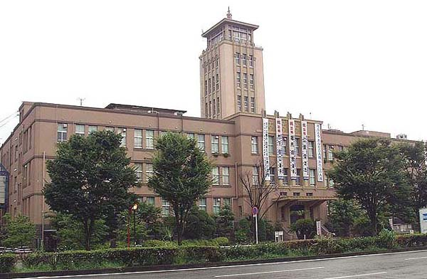

大牟田市役所本館
福岡県大牟田市有明町2丁目3番地
昭和11年竣工、鉄筋コンクリート4階建て。アールや装飾に特徴があり、その威風堂々たる 構えは、「炭都 大牟田」と言われた時代の名残を感じさせている。
その炭都時代、今と違って市職労の影響力が強かったことから職員を多く採用し過ぎ、そのことが現在市財政を圧迫し ている一因にもなっているという。そのせいかどうか、炭鉱離職者等に対する対応も冷たいと感ずる時もある。

（2004年8月1日撮影）
BACK